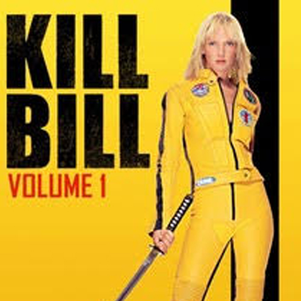

Kill Biill: Volume 1
Released October 2003
Top-billed actors:
- Uma Therman as 'Beatrix Kiddo'
- David Carradine as 'Bill'
- Daryl Hannah as 'Elle Driver'
- Lucy Liu as 'O-Ren Ishii'
Are You Experienced is the debut studio album by the Jimi Hendrix Experience. Released in 1967, the LP was an immediate critical and commercial success, and it is widely regarded as one of the greatest albums of all time. The album features Jimi Hendrix's innovative approach to songwriting and electric guitar playing which soon established a new direction in psychedelic and hard rock music.

Elements
- Blood
- Manic Chopping
- Mr. Bill
- Love and treachery
- NOT kid-friendly
- Bill is not dead, yet
Bill
- The Wind Cries Mary
- Fire
- 3rd Stone from the Sun
- Foxey Lady
- Are You Experienced?
- In 2013, Mojo magazine listed "Are You Experienced" as the greatest guitar album of all time.
- The budget for the recordings was rather limited so Chas Chandler (producer) and Hendrix completed much of the album's pre-production work at their shared apartment.
- Uma and Quentin,
on set - Are You Experienced sold more than one million copies within seven months of its release.